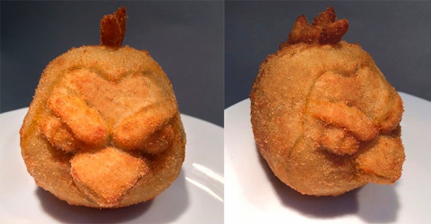

!DOCTYPE html>
Menu De Receitas
Meu Livro de Receitas
Coxinha de Frango

Ingredientes:
- 1 peito de frango cozido e desfiado
- Massa pronta para coxinha (à venda em supermercados)
- Óleo para fritar
Instruções:
- Preparando o Recheio:
- Cozinhe e desfie o peito de frango.
- Tempere o frango desfiado com sal, pimenta e temperos a gosto.
- Montando as Coxinhas:
- Pegue um pouco de massa pronta para coxinha e achate-a na palma da mão.
- Coloque um pouco do frango desfiado no centro da massa.
- Modelando e Fritando:
- Feche a massa ao redor do recheio, formando o formato de coxinha.
- Aqueça óleo em uma panela para fritura.
- Quando o óleo estiver quente, frite as coxinhas até ficarem douradas e crocantes.
- Escorrendo e Servindo:
- Retire as coxinhas fritas e coloque-as sobre papel-toalha para escorrer o excesso de óleo.
- Servindo:
- Sirva as coxinhas de frango quentes como um salgado delicioso.